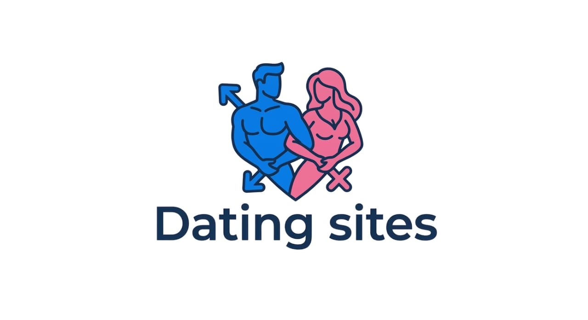

→
⋮

تطبيقات التعارف والمواعدة 👫❤️
Dating Apps & Sites
قناة عامة | Public Channel
دليلك الأول لأفضل مواقع وتطبيقات التعارف الموثوقة. 💘
جمعنا لك أفضل المنصات في البحث.. 🎯
Your ultimate guide to the best and trusted dating apps. 💘
We gathered the top platforms for you.. 🎯
t.me/Top_dating_sites1
المشتركون
Subscribers
12550
المشرفون
Administrators
1
انضمام للقناة
Join Channel